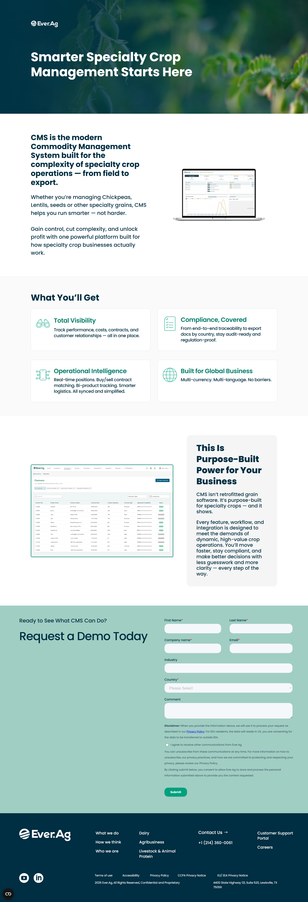
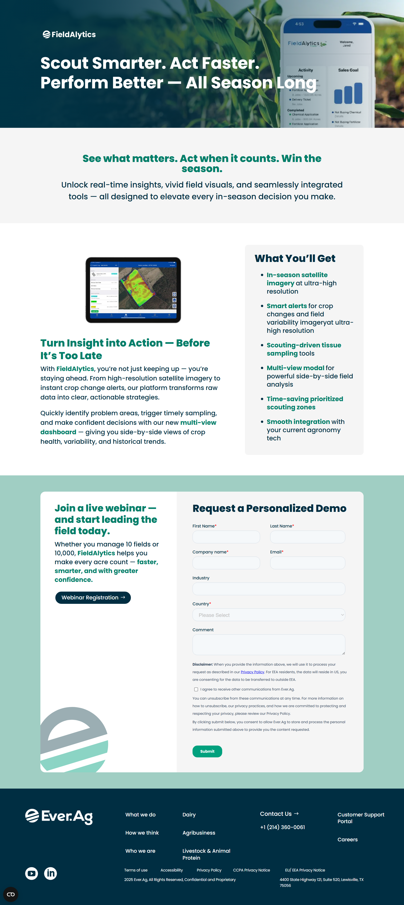
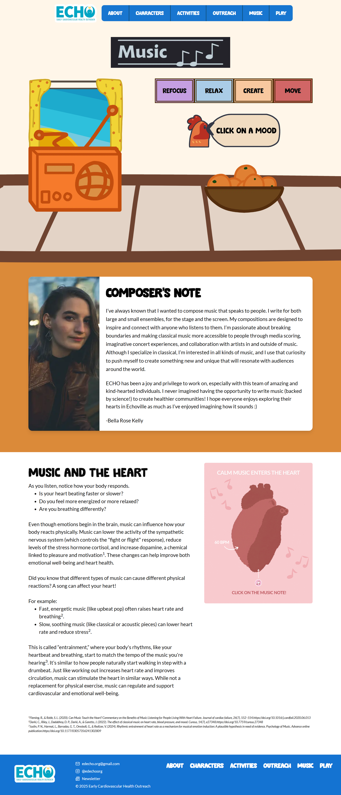
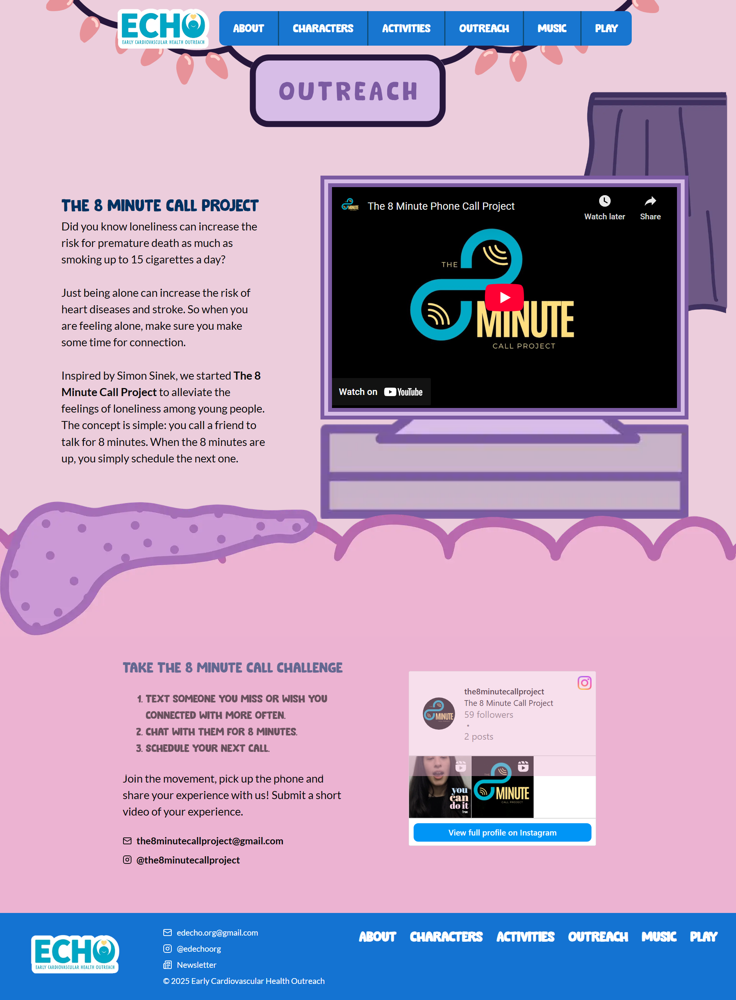
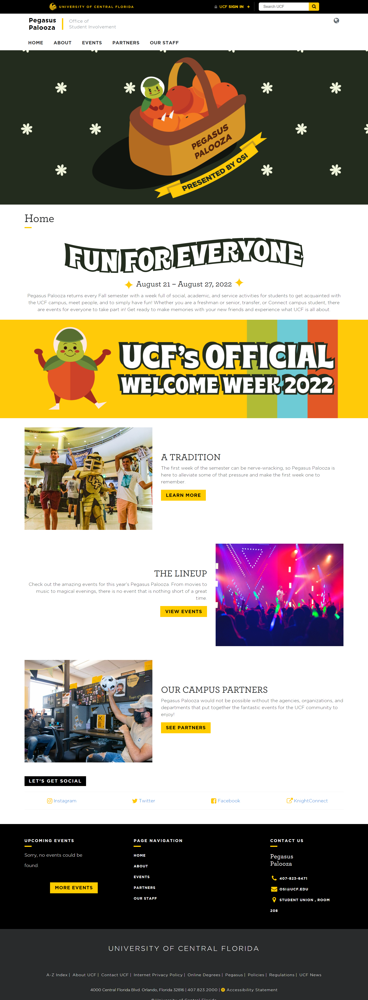
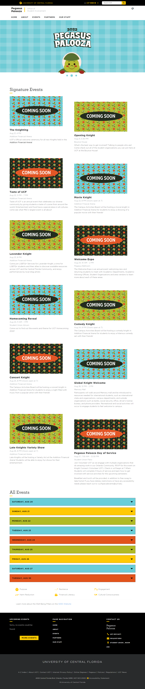
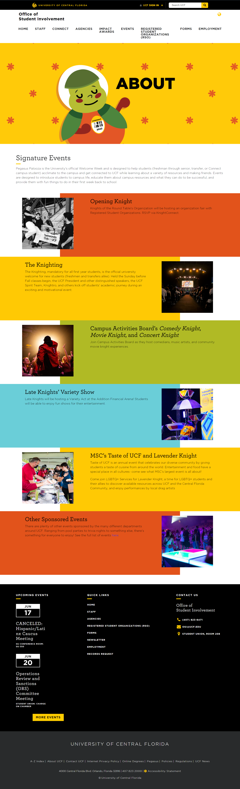

Web Development
I am most experienced with coding websites from the ground up with HTML/CSS/Javascript, including this portfolio site! I have also worked with WordPress and Hubspot drag-and-drop editors, and create custom modules when needed for clients. I am often working on campaign landing pages, blogs, and website maintenence updates.
Ever.Ag
At Ever.Ag, I create landing pages and blogs using WordPress and Hubspot. Recently, I was part of an initiative to design and develop some landing page templates for a refresh, and I utilized Hubspot's langage HubL to develop some custom modules that other designers could use easily in future designs. I also report on website analytics on a weekly basis, and support the central marketing team with tech needs.
Tech used:
Specialty Crops Landing Page - Desktop

In-season page - Desktop

EdEcho.Org
I am the website designer and one of the website developers for EdEcho. This project involved coding a website for EdEcho, an up-and-coming organization that is focused on creating materials for educating youth on heart health. I developed 7 of the pages, which included interactive content such as a music player and an activities section. In addition to developing the pages, I first created the UX wireframes for the website and you can view the figma file here
Tech used:
Music Page - Desktop

Outreach Page -Desktop

Pegasus Palooza
I previously worked as a web designer for the Office of Student Involvement at UCF, and got the opportunity to develop some page layouts in WordPress. Pegasus Palooza is a series of activities for UCF's welcome week, and I co-developed new layouts for the palooza micro-site. These pages also feature graphics that I assisted in creating.
Tech used:
Home Page - Desktop

Events Page - Desktop

About Page - Desktop
